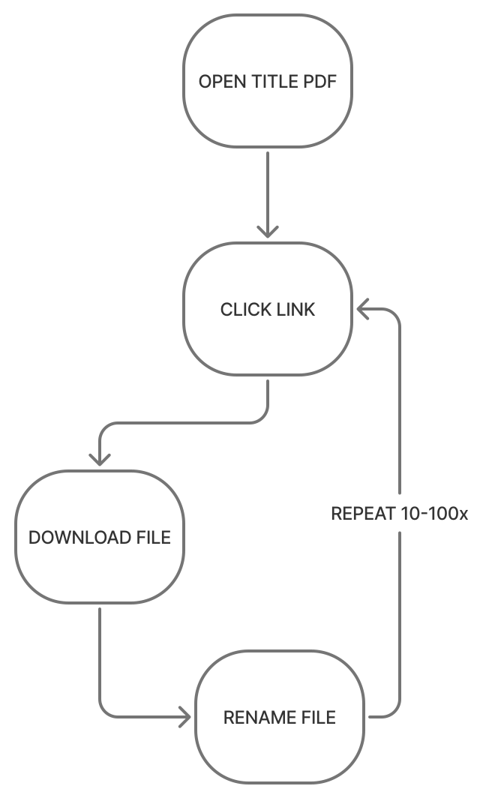
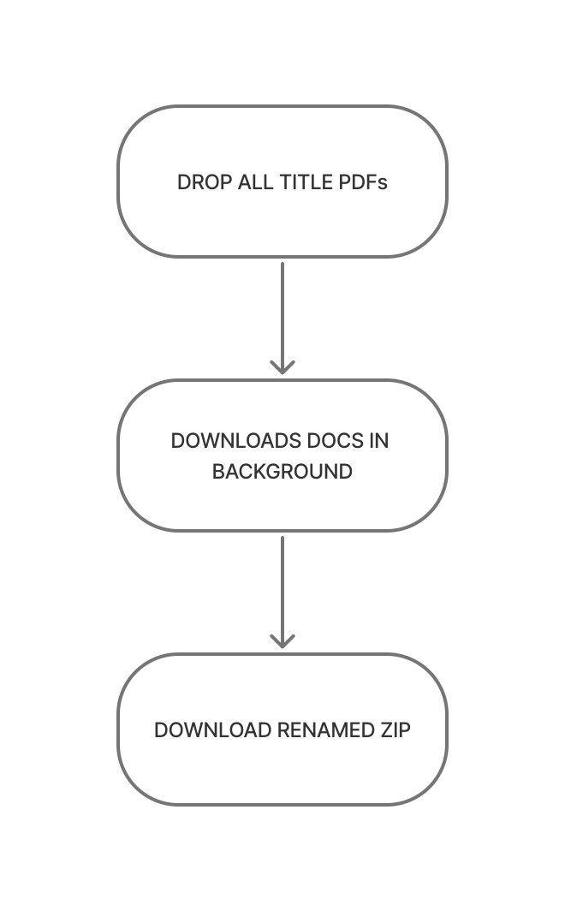

Case Study · Internal Tool
Automating Title Document Retrieval
A drag-and-drop web app that turns hours of manual link-clicking into a background task — now processing 6,000+ documents a month at roughly 97% success.


01 · Context
A due diligence bottleneck hidden in every title
Every commercial property title arrives as a PDF packed with hyperlinks to recorded documents: deeds, easements, plats, tax records. Fifteen employees at our due diligence firm spent hours clicking each link, downloading each file, and renaming it by hand.
Our CEO brought the problem to me to automate — leadership had also discussed offshoring the work. I built a drag-and-drop web app that turns an entire portfolio of titles into a background task. It now processes an estimated 6,000+ documents a month at roughly 97% success.
02 · The Problem
Why the manual process didn't scale
Manual Overhead
A typical title links 10 to 40 documents, and some exceed 100. Each one meant a click, a download, and a wait — repeated across every title.
Unusable Files
Portals downloaded documents with random file names. Staff renamed every file by hand to match its link text so they could find and reference it with clients.
No Room to Scale
Clients often send portfolios of 30 to 90 titles at once. Each portfolio became a whole project for one person.
03 · The Shift
Before / After
The manual loop ran once per document. The new flow runs once per portfolio.
per document

per portfolio

04 · The Solution
What the app does
Five capabilities turn an unpredictable, portal-by-portal chore into one reliable batch.
Batch Processing
Users drop an entire portfolio of title PDFs at once. A queued cloud backend processes them concurrently, so nobody waits on one title before starting the next.
Ambient Visibility
Each file gets a live job card that moves from queued to downloading, renaming, and done. The browser tab title updates with progress too, so users can submit a batch, switch windows, and keep working.
Graceful Failure
When a document can't be retrieved, the rest of the batch still completes. Successful files are available as a ZIP right away. Each failed document is flagged with its reason and a copy of its URL for quick manual follow-up.
Resilient Retrieval
Title companies use many different document portals. The backend tries several download methods, from direct HTTP requests to a headless browser that finds and clicks download buttons. New portals get custom handling as users encounter them.
Job History
Past batches are saved and re-downloadable for 7 days, so a lost ZIP never means reprocessing. Users can revisit any portfolio they've run and pull its files again without re-uploading a single title.
07 · Results
What it delivers
05 · Key Design Decisions
Two calls that shaped the product
From AI naming to anchor text
The first version used Google's Gemini API to read the first page of each document and generate a descriptive name, such as "Warranty Deed – Parcel 12." It worked, and it shipped.
About a month after launch, users asked for something simpler: name each file exactly as its link text reads. The link text is the shared vocabulary between our team and our clients. When a client says "Exhibit B-4," staff need a file called Exhibit B-4, not a smarter label they have to translate.
I switched to anchor-text naming. The lesson: the most sophisticated solution isn't always the most useful one. Real usage told me what mattered — consistency with how people already talked about the documents.
Designing for failure first
Document links live on dozens of third-party portals I don't control. Links expire, portals change, and some sites block automated access. A tool that failed the whole batch on one bad link would have been worse than the manual process.
So I treated failure as a normal outcome rather than an edge case. Every batch returns what it could get immediately. Failures come back with a reason and the original URL. Users only touch the handful of documents that truly need a human. Over time, adding handling for new portals has reduced those failures to a small share per title.
06 · Process
How I built it
As the sole designer and developer, I optimized for getting a working tool into users' hands fast.
Batch-first scoping
Clients send whole portfolios, so I designed for batches from day one instead of retrofitting them onto a single-file tool.
Wireframe, then build
I wireframed the empty state in Figma to nail the first impression — one clear drop zone — and designed the rest directly in code.
Iterate from real usage
Post-launch feedback drove the biggest changes, including the switch to anchor-text naming and new handling for each unfamiliar portal users encountered.
Closing
This project turned a job the company considered offshoring into a background task. It reinforced a principle I bring to every internal tool: design for how the work actually happens, including when things go wrong. The right answer came from watching real usage, not from the cleverest first idea.